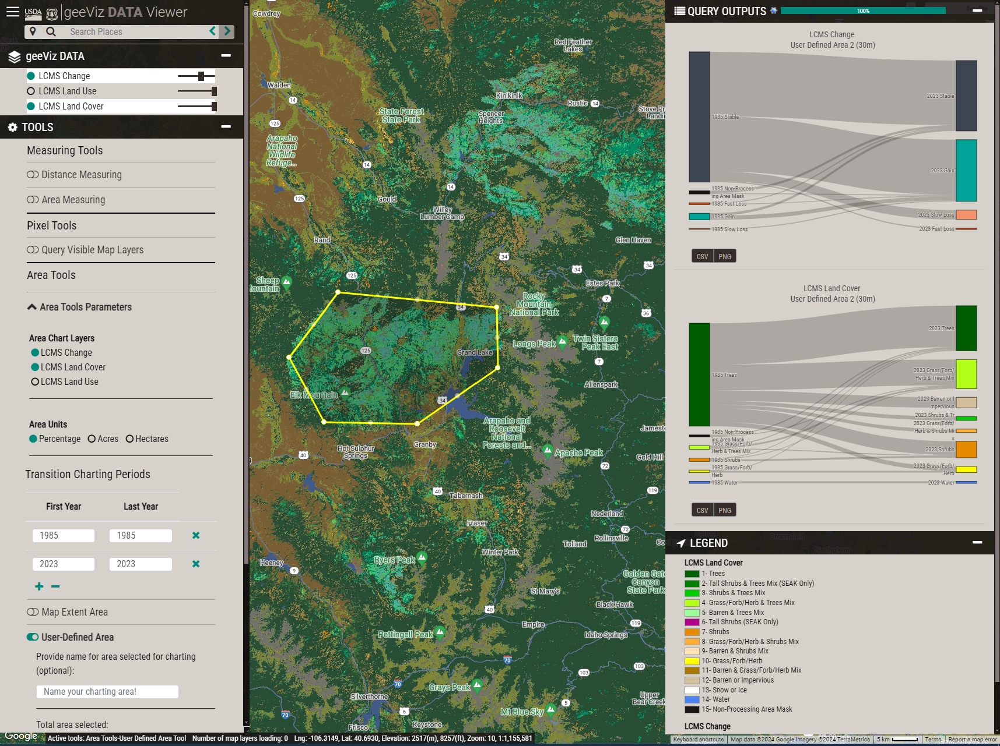

geeViz Documentation#
geeViz is a Python package that helps with data processing, analysis, and visualization in Google Earth Engine (GEE).
- geeViz provides a number of functions for working with GEE data, including:
Importing and exporting data
Data filtering and manipulation
Data analysis and visualization
Creating and managing maps
geeViz works inside and outside Python notebook environments, providing a flexible method for visualizing data in GEE using Python
Check out the Installation section for further information, including how to install the package.
Check out the Examples section for examples showing uses of geeViz.
geeViz.geeView.mapperis based on the Landscape Change Monitoring System (LCMS) Viewer framework. It leverages the same code the LCMS viewer uses, providing the ability to easily view and explore GEE objects in a map environment.
Attention
Please note that this documentation website is still under development. Future releases will have more complete documentation.
Search geeViz Documentation#
geeViz Overview#
- Installation
- Overview
- Details
- geeViz.geeView
RGB_to_hex()baseDomain()cleanAccessToken()color_dict_maker()getProject()get_poly_gradient_ct()hex_to_rgb()isPortActive()is_notebook()linear_gradient()mappermapper.portmapper.proxy_urlmapper.refreshTokenPathmapper.serviceKeyPathmapper.projectmapper.turnOffLayersWhenTimeLapseIsOnmapper.addAreaChartLayer()mapper.addLayer()mapper.addSelectLayer()mapper.addTimeLapse()mapper.centerObject()mapper.clearMap()mapper.clearMapCommands()mapper.clearMapLayers()mapper.populateAreaChartLayerSelect()mapper.setCanReorderLayers()mapper.setCenter()mapper.setMapTitle()mapper.setQueryBoxColor()mapper.setQueryCRS()mapper.setQueryDateFormat()mapper.setQueryPrecision()mapper.setQueryScale()mapper.setQueryToInfoWindow()mapper.setQueryToSidePane()mapper.setQueryTransform()mapper.setTitle()mapper.setYLabelFontSize()mapper.setYLabelMaxLines()mapper.setZoom()mapper.turnOffAllLayers()mapper.turnOnAllLayers()mapper.turnOnAutoAreaCharting()mapper.turnOnInspector()mapper.turnOnSelectionAreaCharting()mapper.turnOnUserDefinedAreaCharting()mapper.view()
polylinear_gradient()refreshToken()robustInitializer()run_local_server()serviceAccountToken()setProject()verified_initialize()
- geeViz.getImagesLib
HoCalcAlgorithm2()RefinedLee()addDateBand()addFullYearJulianDayBand()addIndices()addJulianDayBand()addSAVIandEVI()addSensorBand()addSoilIndices()addTCAngles()addYearBand()addYearFractionBand()addYearJulianDayBand()addYearYearFractionBand()addZenithAzimuth()applyBitMask()applyCloudScoreAlgorithm()cFmask()cFmaskCloud()cFmaskCloudShadow()collectionToImage()compositeDates()compositeTimeSeries()dailyMosaics()defringeLandsat()exportToAssetWrapper()exportToCloudStorageWrapper()exportToDriveWrapper()fillEmptyCollections()formatArgs()getImageCollection()getLandsat()getProcessedLandsatScenes()getQABits()getS1()getS2()getSentinel2()getTasseledCap()harmonizationChastain()harmonizationRoy()landsatCloudScore()maskEmptyPixels()maskS2clouds()medoidMosaicMSD()offsetImageDate()rescale()setNoData()sieve()simpleAddIndices()simpleAddTCAngles()simpleGetTasseledCap()simpleTDOM2()toDB()toNatural()uniqueValues()wrapDates()
- geeViz.changeDetectionLib
- geeViz.taskManagerLib
- geeViz.assetManagerLib
- geeViz.cloudStorageManagerLib
- geeViz.gee2Pandas
- geeViz.foliumView
- geeViz.phEEnoViz
- geeViz.geeView
- Examples
- Python script examples
- Python notebook examples
- Getting Started using geeViz
- Starter geeViz geeView Notebook
- Importing
geeViz.geeView - Adding a GEE image (NLCD) to the
Mapand viewing and querying it - Visualizing multiple layers on the map
- Introducing map query lookup tables and custom styles
- Visualizing vectors and rasters on the map
- Visualizing GEE layers as a local geojson vector
- Using geeView’s
Map.addTimeLapsefunction to visualize animageCollection
- Importing
- Starter geeViz geeView Notebook
- Visualize multi-temporal imageCollections
- Visualize MapBiomas Datasets
- Visualize the Global Land Cover Dataset
- Visualize LCMS and LCMAP Outputs
- Leverage geeViz.getImagesLib to consistently process Landsat data
- Interactively summarize data
- Visualizing Area Summaries
- Basic Area Charting
- Line and Sankey Charts
- Ways of adding area charting layers
- Charting Non-Thematic Data
- Charting Images
- Charting Images Without Color and Name Properties
- Charting Time Lapses
- Charting Thematic Data without set properties
- Comparing map output versions
- Other charting summary zone selection methods
- Visualizing Area Summaries
- Learn how geeViz compares to geeMap
- Run LandTrendr
- Visualize LCMS and LCMAP Outputs
- Visualize CCDC Outputs
- Getting Started using geeViz
- Other examples